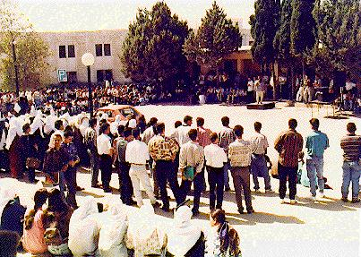

Photo Diary
Day 1: Wednesday 25th September 1996, "Rally at Birzeit University"

Photo by Yasser Darweesh
INTRODUCTION: It's been a hard year for Birzeit students:
- Permits have been taken away completely from the Gaza students.
- Access to the university has been prevented several ocassions by Israeli checkpoints, the longest for two continuous weeks.
- One-tenth of them were detained by Israeli troops in one day, March 28th.
- Arrests have continued, despite Israeli redeployment in December 1995.
- Torture in Israeli prisons is in the process of being legalised.
- Students are regularly prevented from travelling abroad and - most significantly - even inside the country, to Jerusalem.
In common with Palestinians all across the West Bank, students were upset to hear the latest Israeli attempts to 'Judaise' Jerusalem. They held a rally on the campus in the morning and left the university at around 11am to travel by bus to Jerusalem. They knew they would not be allowed to travel there and planned to demonstrate at the place where they were stopped.
Click here for NEXT ENTRY
Click here for PHOTO DIARY
INDEX
_______________________________________________________
Website and related material from Birzeit University staff
High resolution photos available by request.
Contact nparry@admin.birzeit.edu.